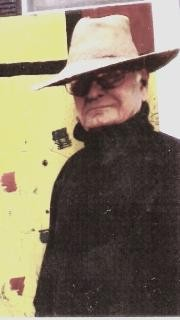
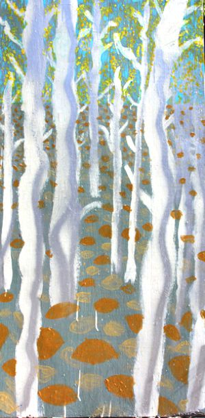
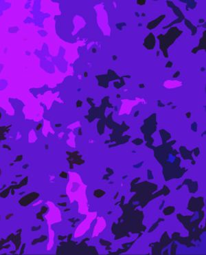

Jester-Knight
Literature
Film
Music
Visual Art
Tributes
Submissions
Links
Contact
Duane Locke

Biography
Duane Locke, PH. D, lives hermetically in Tampa, Florida near anhinga, gallinules, raccoons, alligators. Has had published 6,826 different poems, none self-published or paid to be published. This includes 32 books of poems.
His latest book publications are DUANE LOCKE, THE FIRST DECADE, 1968-1978 (First 11 books—Order from publisher Bitter Oleander Press or AMAZON---YANG CHU’S POEMS,
Order from AMAZON---TERRESTRIAL ILLUMINATIONS, FIRST SELECTION, from FOWLPOX PRESS.
He is a photographer of Surphotos and Nature. Has had 417 photos published, Some as book covers. A book of 40 of his surphotos has been published by BLAZE VOX, POETIC IMPRINTS, RESPONSES TO THE ART OF DUANE LOCKE, by Connie Stadler and Felino Soriano.
His paintings have been described in Gary Monroe’s EXTRAORDINARY INTERPRETITONS, published by University of Florida Press, and are in many private collections and museums.


He is a student of philosophy—favorites: Martin Heidegger, Maurice Merleau-Ponty, Jacques Lacan, and Jacques Derrida.
Click below for Duane's work
Poems (.pdf) NEW!!!
Terrestrial Illumination 2 (.pdf)
Terrestrial Illumination (.pdf)